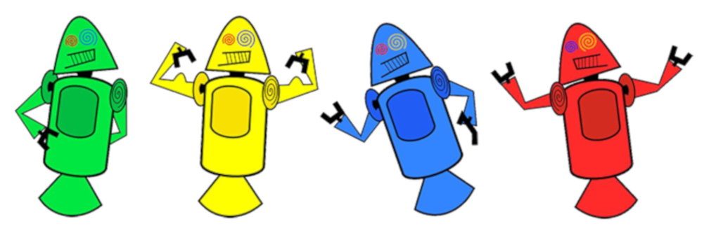

história do mascote do android
Provavelmente você sabe que o sistema operacional Android, mantido pelo Google é um dos mais utilizados para dispositiveis móveis em todo o mundo. Mas talvez você não saiba que seu o simpático mascote tem um nome e uma história muito curiosa? Pois acompanhe esse artigo para aprender muita coisa sobre esse robozinho.
A primeira versão
A primeira tentativa de criar um mascote surgiu em 2007 e veio de um desenvolvedor chamado Dan Morril 📱. Ele conta que abriu o Inkspace 📱 (software livre para vetorização de imagens) e criou a sua própria versão de robô. O objetivo era apenas personificar o sistema apenas para a sua equipe, não existia nenhuma solicitação da emprasa para a criação de um mascote.
Essa primeira versão bizarra até foi batizada em homenagem ao seu criador. Seriam os Dandroids
Surge um novo mascote
A ideia de mascote foi amadurecendo e passou e a missão foi passada para uma profissional da área. A ilustradora Russa Irina Blok 📱 também funcionária do Google, ficou com a missão de representar o pequeno robô de uma maneira mais agradável.

A ideia principal da Irina era representartudo graficamente com poucos trços de forma mais chapada. O desenho também deveria gerar identificação rápida com quem o olha. Surgiu enta o Bugdroid, o bovo mascote do Android

A principal inspiração para os traços do novo Bugdroidveio daqueles bonequinhos que ilustram portas de banheiro para indicar o genêro de cada porta. Conta a lenda que a artista estava criando em sua meso no escritório do Google e olhou para o lado dos banheiros e a identificação foi imediata: simples, limpo, objetivo.
Quer aprender mais?
Outro assunto curioso em relação ao Android é que cada versão sempre foi nomeada em homenagema um doce, em ordem alfabética a partir da versão 1.5 até a 9.0.
- 1.5 - Cupcake
- 1.6 - Donut
- 3.0 - Eclair
- 2.2 - Froyo
- 2.3 - GingerBread
- 3.0 - Honeycomb
- 4.0 - IceCreamSandwich
- 4.1 - Jelly Bean
- 4.4 - KitKat
- 5.0 - Lolipop
- 6.0 - Marshmallow
- 7.0 - Nougat
- 8.0 - Oreo
- 9.0 - Pie
Infelizmente, o Android Q não existiu, pois o Google resolveu põr fim a essa divertida prática e começou a usar numerações, o que deu origem ao Android 10.
Acesse aqui o site Android History 📱 para conhecer a sequência das versões "adocicadas" e o que cada uma trouxe para o sistema Android.